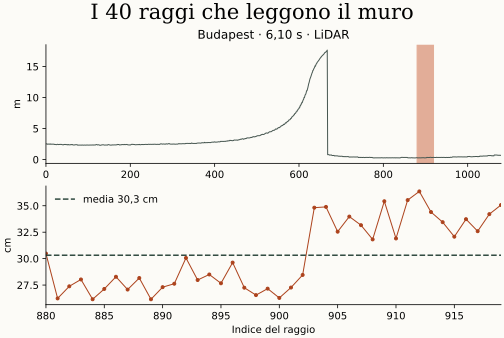
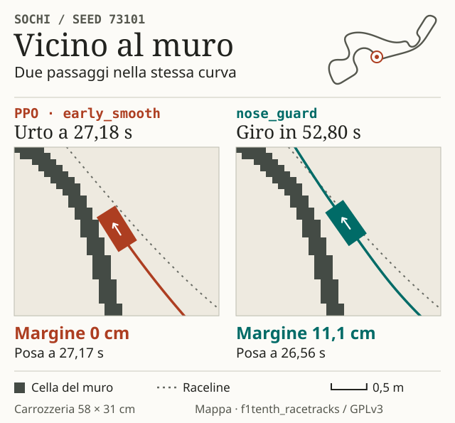

Dentro la sterzata sbagliata
A Budapest l’auto ha il muro alla sua sinistra e chiede ancora tutto sterzo a sinistra. Astra ha letto i pesi della rete addestrata con PPO, osservato quali neuroni si attivavano in curva e provato le modifiche nel simulatore. Il mio vincolo, in uno dei sei prompt documentati, era «solo modifiche ai pesi». I prompt e il protocollo
La correzione sta in due neuroni riutilizzati. Il primo legge 40 raggi laser rivolti a sinistra. Il secondo attenua una sterzata forte quando il muro è vicino. Ecco tre righe del programma che scrive il primo neurone. Codice della modifica
w1[15, :] = 0.0
w1[15, 880:920] = -7.5
b1[15] = -292.0



Quanto cambia su 210 partenze?
A pesi congelati, la sola correzione dello sterzo porta i giri completati da 167 a 179, quasi allo stesso passo. Aumentando anche il comando di velocità di 0,2 m/s, Astra arriva a 180 su 210. La seconda versione cambia 1.276 valori ed è più veloce in tutti i 164 giri completati da entrambe le reti, del 2,01% in media.

Una rete scritta da zero
Poi ho chiesto ad Astra di generare una rete da zero. Questa volta Astra ha scritto un programma che traduce la sagoma dell’auto e le equazioni del veicolo in 28.427 coefficienti. Durante la guida la rete riceve una scansione laser e valuta 17 possibili curvature. Le prime tre prove finiscono contro il muro. Quando Astra include nei pesi la deriva prevista in curva, la rete supera tutte e tre. Seguono altre revisioni in simulazione, senza addestramento. Dalle formule ai pesi


Su 105 nuove partenze, la rete finale completa 95 giri, con dieci timeout e zero collisioni segnalate. La PPO già migliorata ne completa 88, con 17 collisioni. Nei 95 arrivi della nuova rete, l’ingombro dell’auto resta separato dalle celle del muro in ogni posa registrata. Il margine più piccolo è 0,85 cm sulla mappa.


Fin dove arriva questa prova?
In una sessione Astra ha saputo inserire una regola leggibile in una rete addestrata e costruire un secondo controllore a partire dalla geometria. I pochi prompt misurano quanto ho dovuto specificare io. Tra una richiesta e l’altra, Astra ha scritto codice, osservato incidenti e scartato soluzioni. Resta aperta la domanda più interessante: con un’altra rete di partenza, quanto spesso riuscirebbe a trovare da sola una correzione altrettanto efficace?
Le prove coprono un giro alla volta su 21 piste note. Restano dieci partenze senza arrivo e resta da provare l’auto reale. Nel protocollo si trovano anche i tentativi falliti e la verifica successiva dei timeout. Risultati completi · Relazione F1TENTH originale, con Manuel Andruccioli e Giacomo Totaro (PDF) · Codice, pesi e dati